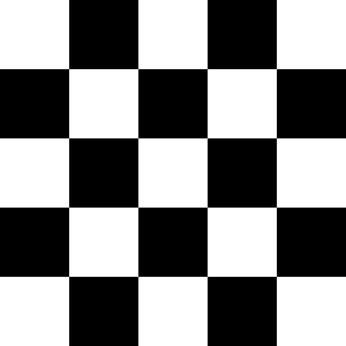

🖥️
Console & WPF
Quick terminal play or a full-featured Windows desktop experience.
Open source · C# · .NET 10
Play Checkers from the console, a polished Windows desktop app, or online against a friend — with a server that validates every move.
Quick terminal play or a full-featured Windows desktop experience.
A SignalR server connects players in real time and validates every move.
Switch between themes to suit your eyes and your surroundings.
Available in English and Polish, with shared resources for more.
Shared game logic in its own library, covered by NUnit tests.
Read the code, file issues, and contribute on GitHub.
A tiny in-browser demo of the core rules: diagonal moves, mandatory captures and kings. You play red; the computer plays the other side.
Your move.

Requires the .NET 10 SDK. The WPF app needs Windows.
git clone https://github.com/Stani1k/Checkers-Game.git
cd Checkers-Game
dotnet build Checkers-Game.sln
# Console app
dotnet run --project Checkers.Console
# WPF app (Windows)
dotnet run --project Checkers.WPFConsole application
Windows desktop app
SignalR server for online play
Shared logic and resources
New to the game? See Checkers on Wikipedia.